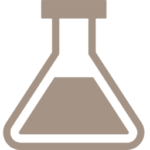

NOSOTROS
En el Policlínico SIKALMA contamos con un equipo de profesionales de la salud comprometidos con el bienestar integral de cada paciente que confía en nosotros.
Nuestro enfoque combina la atención médica de calidad con un trato humano y cercano, brindando un espacio seguro donde cada paciente pueda recibir un diagnóstico oportuno y un tratamiento adecuado.
Creemos en la importancia de una atención personalizada, respetando la condición, el historial y las necesidades de cada persona. Más que un servicio de salud, somos un centro orientado a la prevención, el cuidado y la mejora continua de la calidad de vida de nuestros pacientes.
NUESTRA MISIÓN
Brindar servicios de salud integrales con calidad, profesionalismo y trato humano, orientados a la prevención, diagnóstico y tratamiento oportuno de nuestros pacientes.
NUESTRA VISIÓN
Ser un policlínico de referencia, reconocido por la excelencia en la atención médica, la ética profesional y el compromiso con la salud y bienestar de la comunidad.
Tratamientos
En el Policlínico SIKALMA ofrecemos diversas especialidades médicas orientadas a la prevención, diagnóstico y tratamiento de distintas condiciones de salud. Nuestro objetivo es brindarte una atención integral y oportuna, utilizando procedimientos adecuados para mejorar tu bienestar y calidad de vida.

Consulta Médica General
¿En que consiste?
Evaluación del paciente mediante revisión clínica, síntomas y antecedentes médicos.
¿Para que sirve?
Permite diagnosticar enfermedades comunes y orientar el tratamiento adecuado.

Control Pediátrico
¿En que consiste?
Evaluación del crecimiento, desarrollo y estado de salud del niño.
¿Para que sirve?
Permite detectar problemas a tiempo y asegurar un desarrollo saludable.

Evaluación Ginecológica
¿En que consiste?
Revisión médica del sistema reproductor femenino y control preventivo.
¿Para que sirve?
Permite prevenir, detectar y tratar enfermedades ginecológicas.

Tratamiento Odontológico
¿En que consiste?
Evaluación y tratamiento de problemas bucales como caries o infecciones.
¿Para que sirve?
Mejora la salud bucal y previene complicaciones dentales.

Atención Traumatológica
¿En que consiste?
Evaluación de lesiones musculares, articulares o óseas.
¿Para que sirve?
Permite tratar dolores, lesiones y mejorar la movilidad del paciente.
Consulta Dermatológica
¿En que consiste?
Evaluación de la piel, cabello y uñas mediante diagnóstico clínico.
¿Para que sirve?
Permite tratar afecciones cutáneas y mejorar la salud de la piel.

Exámenes de Laboratorio
¿En que consiste?
Análisis clínicos como sangre, orina u otras pruebas diagnósticas.
¿Para que sirve?
Ayuda a confirmar diagnósticos y evaluar el estado de salud.
Diagnóstico por Imágenes
¿En que consiste?
Uso de equipos como rayos X o ecografías para evaluar el cuerpo.
¿Para que sirve?
Permite detectar lesiones o enfermedades internas.
Dispensación de Medicamentos
¿En que consiste?
Entrega de medicamentos recetados por el médico.
¿Para que sirve?
Permite iniciar y seguir correctamente el tratamiento indicado.

Atención Psicológica
¿En que consiste?
Evaluación y orientación en salud mental por un profesional.
¿Para que sirve?
Ayuda a manejar problemas emocionales y mejorar el bienestar psicológico.